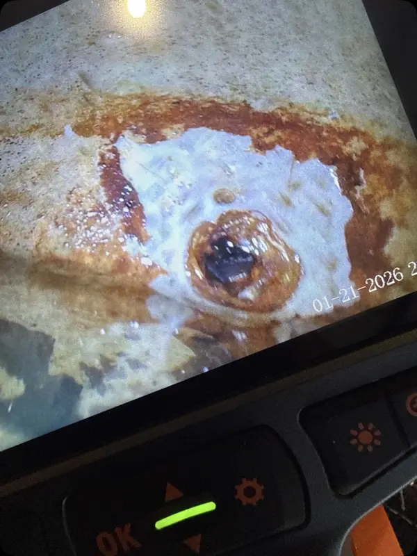
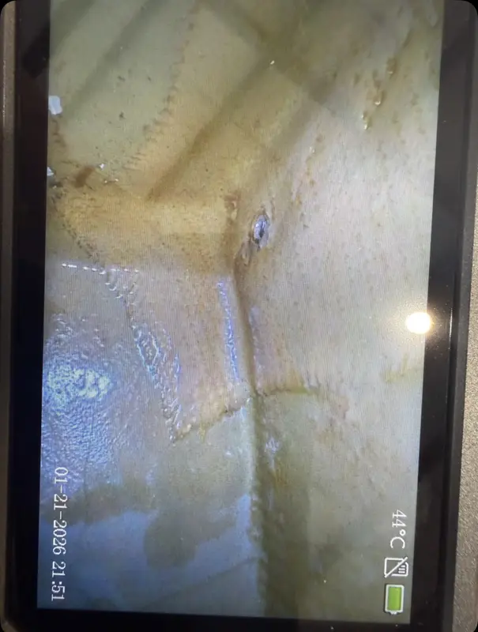

Fuel Delivery
ROTAX Fuel Lines, Fuel Pumps & Fuel Pressure Support
For ROTAX fuel pressure, delivery, vapor, contamination, carb, float, injector, or uneven-running concerns across the 912, 914, 915 iS, and 916 iS families.
What You May Notice
Fuel Problems Often Show Up as Operating Changes.
- Low or unstable fuel pressure indications
- Rough running, stumble, or power change
- Restart, idle, or hot-operation concerns
- Fuel smell, contamination, or unusual drain results
- EMS warnings on injected or turbocharged engines
What It Can Involve
Carbureted and Injected Engines Need Different Context.
- ROTAX 912 carb balance or float issue
- Fuel pumps, filters, routing, and vapor behavior
- Injector, pressure, or EMS inputs on iS engines
- Fuel quality, contamination, and maintenance history
- Installation details and operating conditions
Fuel-system Inspection Evidence
A tank can look serviceable from the filler and tell a different story through a borescope.
Matched before-and-after views keep contamination findings and cleaning results tied to the same inspection area. They support the maintenance record; they do not replace fuel-system review.


Fuel Delivery Review Focus
Pressure is Only Useful with Context.
Fuel pressure readings should be tied to engine model, phase of flight, temperature, pump status, fuel type, warning messages, and whether the symptom appears during start, taxi, climb, cruise, or hot operation. Carbureted and injected ROTAX engines use different review paths.
Installation Context
Routing and History Can Create the Complaint.
Pump configuration, filters, heat exposure, hose age, fuel quality, contamination, float or injector history, and recent work can all shape fuel-system symptoms. The review separates fuel delivery evidence from ignition, sensor, or EMS conclusions before the next step is recommended.
What Information Helps First
Send the Symptom and When It Appears.
Start With the Facts
Send When the Fuel-pressure Symptom Appears.
Fuel-pressure symptoms need aircraft configuration, operating condition, pump behavior, fuel type, readings, and when the issue appears.
Send Aircraft Details